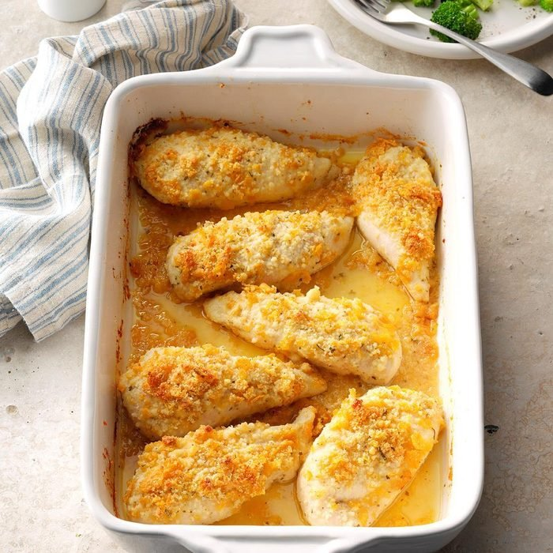

Home
Breaded Parmesan Ranch Chicken

Description
Super easy to make, not to mention tasty.
Serves 8
Prep: 10 minutes
Cook: 45 minutes
Total: 55 minutes
Ingredients
- 8(4oz) boneless, skinless chicken breast halves
- 3/4 cup crushed corn flakes
- 3/4 cup grated parmesan cheese
- 1(1oz) envelope ranch salad dressing mix
- 1/2 cup butter, melted
Directions
- Preheat oven to 350 degrees F(175 degrees C). Grease 9x13in baking dish.
- Combine corn flakes, Parmesan cheese, and ranch dressing mix in bowl. Dip chicken in melted butter; roll each breast in corn flake mixture until evenly coated. Place coated chicken in prepared baking dish.
- Bake until chicken is no longer pink in center and juices run clear, about 45 minutes.